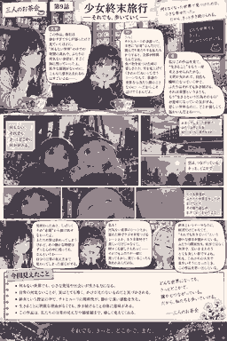

少女終末旅行
何もなくなった世界で、小さな幸せを拾いながら、それでも歩いていく。
「この作品、最初は静かすぎて少し戸惑ったけど、見ていくほどに“何もない世界”の中で流れている時間とか、チトとユーリの何気ない会話がすごく胸に残っていったんだよね。派手な事件が次々起きるわけじゃないのに、食べ物を見つけるとか、知らない場所へたどり着くとか、それだけで一日の輪郭がちゃんと立ち上がる。見終わったあと、自分のいつもの景色まで少し違って見える感じがした。」
「うん。ふたりの会話って本当に“日常”なんだけど、私たちの側から見ると、その全部が特別なんですよね。食べ物を見つけた時の嬉しさとか、空を見上げて綺麗だと思う瞬間とか、普通の世界なら通り過ぎてしまうことが、あの世界ではひとつひとつ生きる理由みたいになる。だからこそ、ちょっと笑っているだけの場面で急に泣きそうになるんです。」
「終末ものなのに、物語の駆動力が“危機を克服すること”ではなく“今日を続けること”なのが面白いのだ。文明も目的もだんだん曖昧になっていくのに、ふたりは歩き、食べ、休み、話す。その反復自体が意味になる。大きなゴールを提示せず、生活の最小単位まで物語を縮めることで、逆に“生きるとは何か”という問いを大きくしているのだ。」
「私、雪の中をケッテンクラートで進む場面がすごく好き。景色はずっと寒くて、建物も壊れていて、本当なら怖いはずなのに、ふたりが並んでいるだけで不思議と安心するんだよね。“安全な場所がある”じゃなくて、“隣にこの人がいる”ことが安全になってる感じ。あの距離感がすごく優しい。」
「しかも、ずっと仲良しで穏やかなだけじゃないのがいいですよね。食べ物のことで揉めたり、ユーリが勢いで動いてチトが呆れたり、チトが考えすぎてユーリに引っ張られたりする。ふたりは性格がかなり違うのに、違うからこそ止まらずにいられる。チトだけなら慎重すぎて立ち止まるかもしれないし、ユーリだけなら危なっかしすぎる。その偏りがふたりでちょうど生活になるんです。」
「依存ではなく補完なのだ。しかも役割が固定されていない。地図や記録を大切にするチトが“意味”を持ち込み、食べることや面白がることに素直なユーリが“現在”を持ち込む。でも場面によってはユーリの無邪気さが核心を突くし、チトの慎重さがふたりを守る。片方が“正解役”ではないから、関係が平面的にならないのだ。」
「何もない場所でふたりが空を見上げる場面も印象に残ってる。“綺麗だね”っていうような感覚が、あの世界にもちゃんと残っているのが嬉しくて。人間が作ったものがほとんど壊れてしまっても、綺麗だと思う心まで一緒に壊れるわけじゃないんだなって。そこがこの作品の希望なのかもしれない。」
「食事の場面も同じですよね。缶詰でも、見つけた食べ物でも、ふたりにとってはちゃんと“嬉しいこと”。豪華さじゃなくて、誰かと一緒に食べることそのものが幸せとして描かれる。だから観ているこっちまで、自分が今日普通に食べたものとか、温かい飲み物とかを急に大事に感じてしまうんです。」
「演出も徹底しているのだ。巨大な廃墟を広く見せて、人間を小さく置く。その一方で、ふたりの顔や手元、食べ物、ノートのような小さなものは近く見せる。世界のスケールは途方もなく大きいのに、物語が見つめる単位は極端に小さい。その対比で、“世界は失われても生活はまだ続く”という感覚が視覚的にも成立しているのだ。」
「そう考えると、あの静けさも必要なんだね。最初は“何か起きないのかな”って待ってたのに、途中から“この時間が終わらないでほしい”って思うようになった。自分の見方が作品の速度に合わせて変わっていった感じ。あれって結構すごい体験だったな。」
「私も。普通だったら物語が進むことを楽しみにするのに、この作品は進むほど終わりに近づいている感じがあるから、ひとつの寄り道や一回の食事が惜しくなるんですよね。小さな発見がふたりの世界を少しだけ広げる。その繰り返しが、そのまま“生きていくこと”になっているんだと思います。」
「そして記録という要素も重要なのだ。チトは書いたり残したりする。文明そのものが消えていく世界で、記録する行為は一見すると実用性が薄い。しかし、“見た”“感じた”“ここにいた”を残すことは、自分たちの時間に形を与える。UI的に言えば、世界にはもう目的表示もクエストマーカーもないのに、自分たちでログを作り続けているようなものなのだ。」
「環、終末世界までUIにする（笑）。でも分かる。誰かに評価されるわけでもないのに残すって、すごく人間らしいよね。役に立つかどうかじゃなくて、“大事だったから覚えていたい”っていう気持ち。そういうものが最後まで残るのかもしれない。」
「それに、ふたりが笑っているから救われるんですよね。寂しさがなくなるわけじゃない。むしろ背景はずっと寂しい。でも、その寂しさの中で冗談を言ったり、食べ物で喜んだり、変なものを面白がったりする。それが“絶望を否定する希望”じゃなくて、“絶望があっても生活する力”に見えるんです。」
「そこが強いのだ。希望を未来の成功として定義しない。明日もっと良くなる保証がなくても、今日誰かと話せた、何かを見つけた、少し笑えた。それで一日をつなげる。終末という極端な設定を使っているのに、結論はとても日常的なのだ。」
「見終わったあと、しばらく余韻から抜け出せなかったよ。ふたりの旅はいつか終わるとしても、あの静かな時間はずっと心に残る気がする。なんというか……自分の日常の見え方まで変わってしまった感じがした。」
「私も。何気ない食事とか、壊れた街で何かを見つける場面とか、全部好きです。楽しいだけじゃなくて、時々すごく寂しい。それでもふたりが一緒に笑っているから、見ているこっちも救われる。大きな答えはくれないけれど、“今日を続けていい”とは言ってくれる作品ですよね。」
「終末というテーマなのに、最後に残るのが“破滅の情報”ではなく“ふたりの関係”なのだと思う。対等で、互いを支え合い、時には呆れ、時には引っ張る。その関係があるから、世界が空っぽになっても物語は空っぽにならない。生きる理由を一つに決めなくても、誰かと歩く時間そのものが理由になり得るのだ。」
今回見えたこと
- 何もない世界でも、小さな発見や出会いが生きる力になる。
- 日常の何気ないことが、実はとても尊く、かけがえのないものだと気づかされる。
- 終末という設定の中で、チトとユーリの関係性が静かで深い感動を生む。
- 生きることに明確な理由がなくても、歩き続けること自体に意味がある。
- 作品の静かな演出と巨大な廃墟の構図が、ふたりの小さな生活をいっそう大切に見せる。
- 『少女終末旅行』は、私たちの日常の見え方や価値観まで優しく変えてくれる。
マンガ
